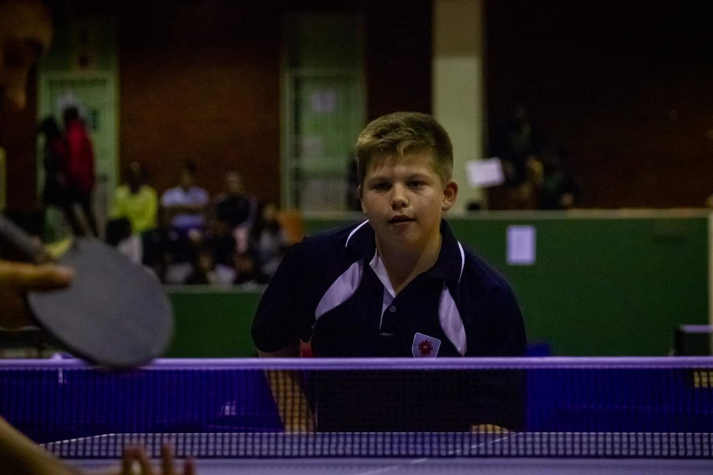

TESTIMONIALS
What our clients say about us.
Today, when I step onto the provincial stage, I carry with me the echoes of Coach Kuda’s voice: “Stay focused. Trust your training. You’ve got the heart of a champion.” His mentorship is not just seen in my trophies but in the resilience etched into my spirit. Thank you, Coach Kuda

Storm Speranza
Tournaments became our proving grounds. Coach Kuda stood by my side, offering tactical insights and calming words during nerve-wracking moments. We celebrated victories, it did not take long to make provincial team from him teaching me from the very basics.

Liam Du Preez
I vividly remember the first time I stepped onto the table tennis court as a wide-eyed student. Back then, I was just another kid with a paddle, chasing after a tiny white ball. Little did I know that under coach Kuda's guidance i would become of a provincial champion.

Imaan Fakey